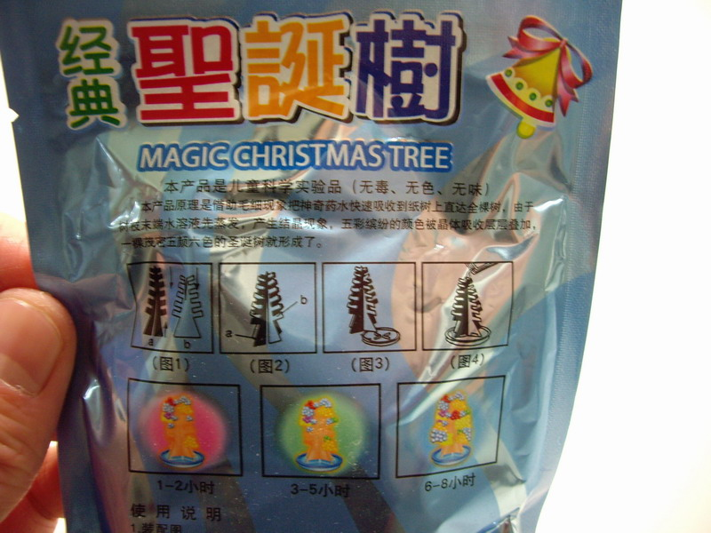
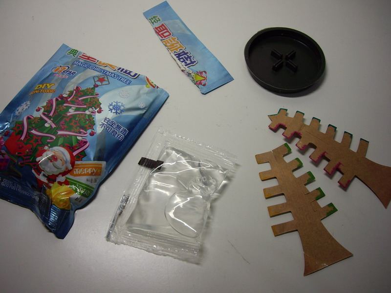
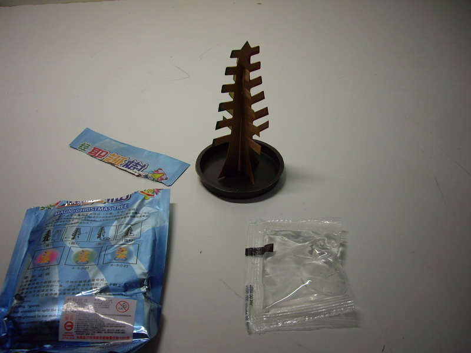
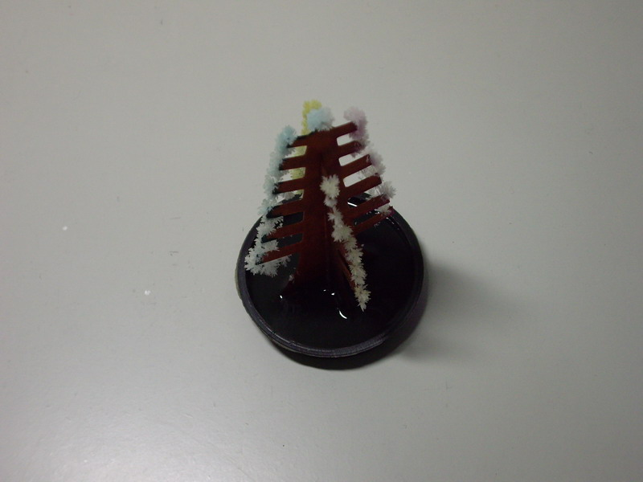
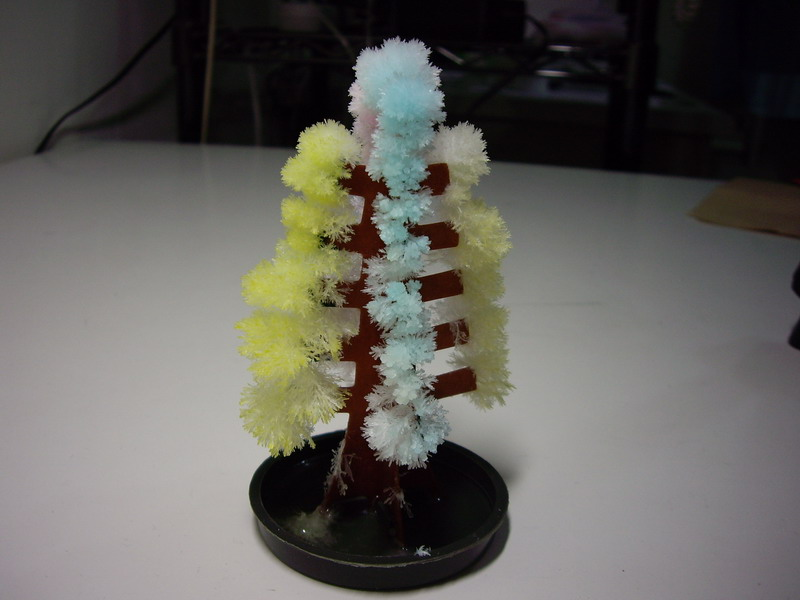
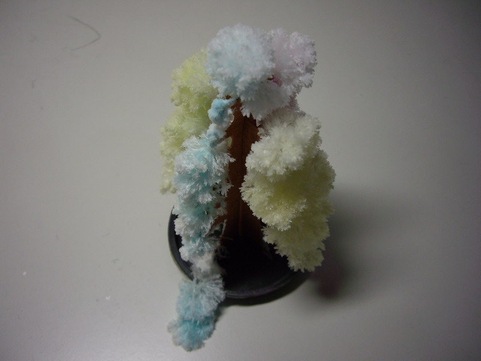

聖誕節前，同事送我一個化學小玩具：結晶聖誕樹，趕快來玩玩看吧！

↑包裝上的說明書，照著做就是了。

↑裡面有：藥水包、小水盆、聖誕樹紙架。

↑架起來了。

↑結晶中。
網路上查到的原理：
溶液是飽和的磷酸二氫鉀水溶液，經由紙張的毛細現象吸到樹上，
水份從樹稍蒸發時，磷酸二氫鉀就會結晶，事先塗在樹枝上的染料會幫結晶著色。

↑完成囉，真漂亮！

↑過了一晚，發現有一側(藍色)的結晶太重了，垮下來之後，斷掉的樹枝上又繼續結晶。
感謝 師大附中 廖靜宜老師(化學) 提供結晶聖誕樹材料。